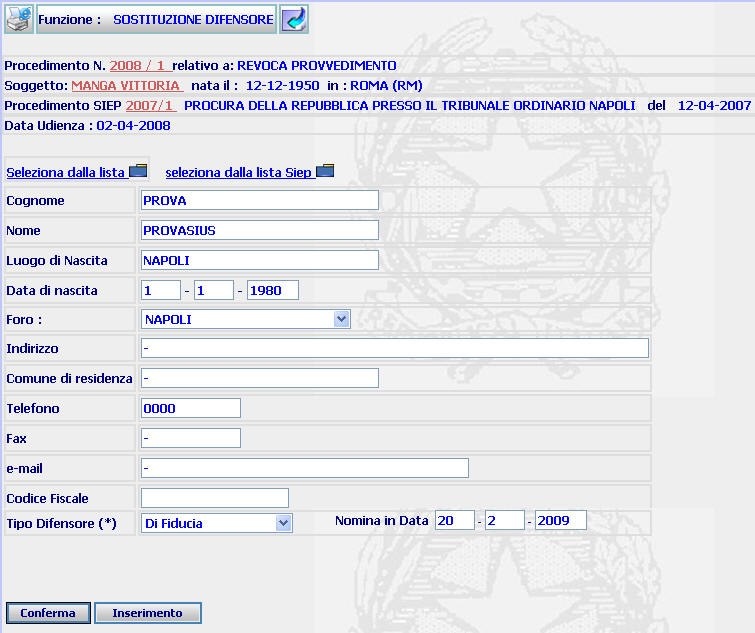
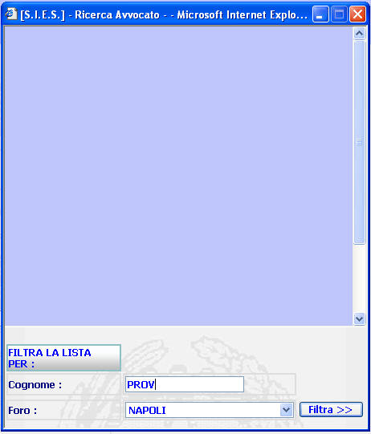
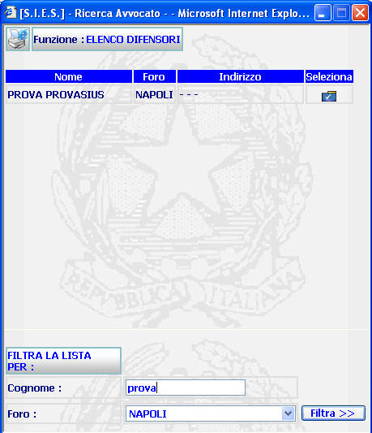
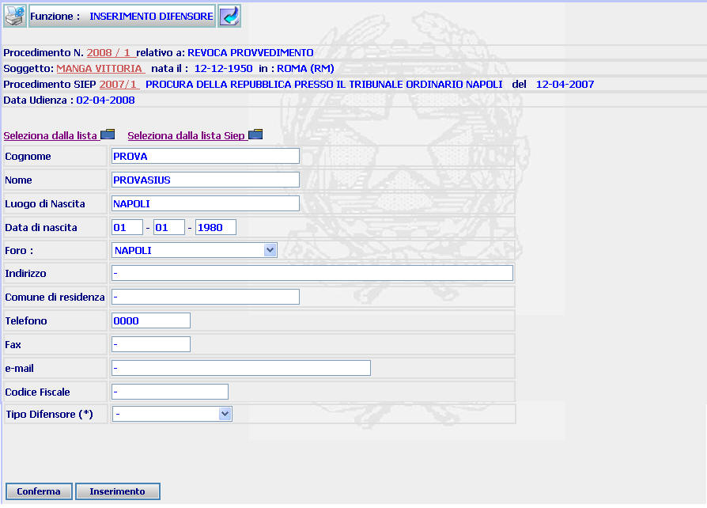
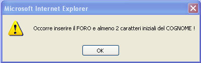
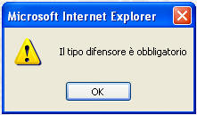

GENERALITA'
SOSTITUZIONE DIFENSORE: La funzione consente di sostituire un difensore precedentemente assegnato al procedimento SIUS.
LE MASCHERE VIDEO
La funzione in esame viene realizzata attraverso l'utilizzo della seguente maschera

COME FARE PER ...
| Per visualizzare il dettaglio del procedimento Sius l'utente deve cliccare sul link relativo all'Anno/Numero del procedimento Sius evidenziato in rosso; |

| Per visualizzare il dettaglio del soggetto l'utente deve cliccare sul link relativo al cognome/nome del soggetto evidenziato in rosso; |

| Per visualizzare il dettaglio del procedimento Siep l'utente deve cliccare sul link relativo all' Anno/Numero del procedimento Siep evidenziato in rosso; |

| Per assegnare un difensore al procedimento Sius, l'utente deve: |
Individuare il difensore attraverso le seguenti operazioni:
selezionare il link
compilare almeno i primi due caratteri del cognome del difensore nella seguente maschera ed il Foro di appartenenza attraverso l'apposita tendina e selezionare il bottone

selezionare il difensore cliccando sulla cartella
relativa al difensore individuato

compilare il campo "tipo difensore" attraverso l'apposita tendina presente nella maschera successiva

Confermare
i dati inseriti nella maschera agendo sul bottone
 . A
fronte di questa operazione
il sistema presenta la maschera di
dettaglio difensore.
. A
fronte di questa operazione
il sistema presenta la maschera di
dettaglio difensore.
|
Per visualizzare il difensore (o i difensori) che risulta assegnato al procedimento Siep di riferimento, l'utente deve selezionare il link e, per assegnarlo al procedimento corrente, deve utilizzare le modalità descritte nella prima sezione |
|
Per inserire un nuovo difensore non incluso nella lista avvocati, l'utente deve selezionare il bottone e compiere le operazioni descritte nella funzione inserimento difensore |
CAMPI
I dati editabili nelle maschere sopra riportate sono i seguenti:
| NOME | DESCRIZIONE |
| Cognome | Compilare il campo con l'indicazione del cognome del difensore (è sufficiente indicare almeno le prime due lettere dello stesso) |
| Foro | Consente di selezionare il foro di appartenenza tramite la relativa tendina |
| Tipo difensore | Consente di selezionare il tipo difensore tramite la relativa tendina |
PULSANTI
Oltre ai pulsanti facenti parte del gruppo di pulsanti di "Uso Comune", sono presenti i seguenti pulsanti:
|
PULSANTE |
DESCRIZIONE |
|
|
Questo pulsante consente di selezionare il difensore individuato nell'apposita lista. |
BOTTONI
Oltre ai comandi funzionali relativi al menù verticale sono presenti i seguenti comandi:
|
COMANDI |
DESCRIZIONE |
|
|
A fronte di questa operazione il sistema presenta la maschera di dettaglio difensore |
|
|
A fronte di tale comando, il sistema fornisce l'elenco dei difensori rispondenti ai canali di ricerca selezionati |
CONTROLLI
| Se, filtrando la lista dei difensori, si omette di indicare almeno i primi due caratteri del cognome il sistema fornisce il seguente messaggio |

| Se non viene individuato alcun difensore rispondente ai canali di ricerca selezionati, il sistema fornisce il seguente messaggio |

| Se, selezionando
il link
,
non viene individuato alcun difensore relativo al fascicolo Siep associato,
il sistema fornisce il seguente messaggio
| |
|
Se si omette di compilare il campo "Tipo Difensore", il sistema fornisce il seguente messaggio |
